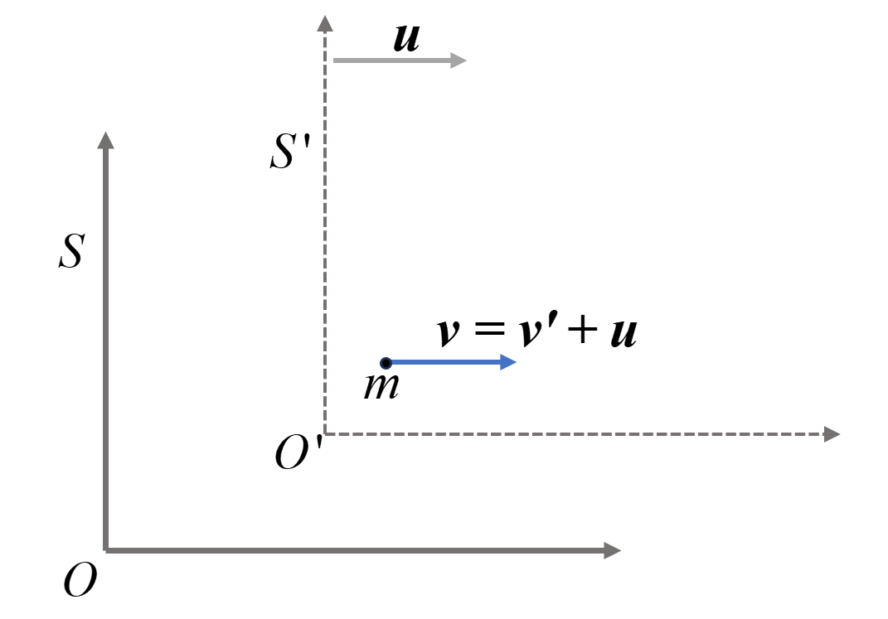
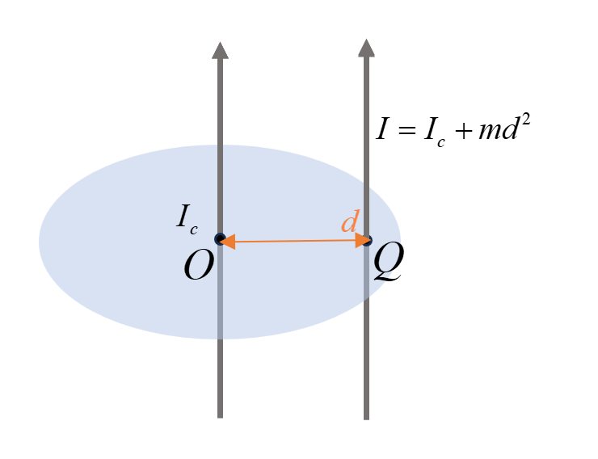

质点运动学
直角坐标系
- 位置矢量（位矢）: 位矢代表的是坐标原点指向质点位置的矢量，求解运动方程就是求解$\boldsymbol{r}(t)$，它给出任意时刻质点的位置，
-
位移：其描述质点位置变化大小和方向。
$$ \Delta \boldsymbol{r}= \boldsymbol{r}_1 - \boldsymbol{r}_2 = (x_1-x_2)\mathbf{e}_x +(y_1-y_2)\mathbf{e}_y+(z_1-z_2)\mathbf{e}_z~. $$ -
速度：在大学物理中，$\dot{A }\equiv \frac{\mathrm{d} A}{\mathrm{d}t} $ ，$A$可以是矢量也可以是标量。
-
平均速度：$\bar{v}=\frac{\Delta \boldsymbol{r}}{\Delta t} $.
-
瞬时速度：一般速度都是指瞬时速度，
$$ \boldsymbol{v} = \dot{\boldsymbol{r}} = \lim_{\Delta t\to 0} \frac{\Delta \boldsymbol{r}}{\Delta t} = \frac{\mathrm{d}\boldsymbol{r}}{\mathrm{d} t} = \dot{x}\mathbf{e}_x + \dot{y}\mathbf{e}_y +\dot{z}\mathbf{e}_z ~. $$
-
-
加速度：
$$ \boldsymbol{a} = \dot{\boldsymbol{v}}=\ddot{\boldsymbol{r}} = \lim_{\Delta t\to 0} \frac{\Delta \boldsymbol{v}}{\Delta t} = \frac{\mathrm{d}^2\boldsymbol{r}}{\mathrm{d} t^2} = \ddot{x}\mathbf{e}_x + \ddot{y}\mathbf{e}_y +\ddot{z}\mathbf{e}_z ~. $$- 常用关系 $\ddot{x} = \frac{\mathrm{d}}{\mathrm{d}t}\dot{x} = \frac{\mathrm{d}x}{\mathrm{d}t}\frac{\mathrm{d}}{\mathrm{d}x}\dot{x} = \dot{x}\frac{\mathrm{d}}{\mathrm{d}x}\dot{x} = \frac{1}{2}\frac{\mathrm{d}}{\mathrm{d}x}\dot{x}^2 $.
极坐标（圆周运动经常使用）
- 位矢表示为$\boldsymbol{r} =r\mathbf{e}_r $，其中 $r = |\boldsymbol{r}|$ 为位矢的大小。
-
圆周运动中 $r$ 不变，但是有角位移$\Delta \theta = \theta(t+\Delta t)-\theta(t)$.
-
圆周运动角速度记为 $\omega = \dot{\theta}$，角加速度记为 $\alpha = \dot{\omega} = \ddot{\theta}$ .
-
极坐标的两个基矢量一般表示为：
- 径向：一般用 $\mathbf{e}_r$ 或 $\hat{r}$ 表示（注意大学物理课本中的$\mathbf{e}_n$与这个方向相反，$\boldsymbol{e}_n$指向圆心，$\boldsymbol{e}_r$背离圆心）。
- 角向/切向：一般用 $\mathbf{e}_\theta$ 或 $\hat{\theta}$ 表示（课本中用$\mathbf{e}_t$表示）。
-
对于运动的质点，极坐标中基矢量会随时间变化
取$\Delta t \to 0$时，有
$$ \left\{\begin{matrix} \dot{\mathbf{e}}_r=\frac{\mathrm{d}}{\mathrm{d}t}\mathbf{e}_r = \dot{\theta}\mathbf{e}_\theta \\ \dot{\mathbf{e}}_\theta =\frac{\mathrm{d}}{\mathrm{d}t}\mathbf{e}_\theta = -\dot{\theta}\mathbf{e}_r \end{matrix}\right. $$ -
速度：
$$ \boldsymbol{v}=\dot{\boldsymbol{r}} = \frac{\mathrm{d}}{\mathrm{d}t}(r\mathbf{e}_r) = \dot{r}\mathbf{e}_r+r\dot{\mathbf{e}}_r = \dot{r}\mathbf{e}_r + r\dot{\theta}\mathbf{e}_\theta~. $$- 对于圆周运动 $\dot{r} = 0$，有 $\boldsymbol{v} = r \dot{\theta}\mathbf{e}_\theta $，和高中学过的$v = \omega r$ 是一样的.
-
加速度：
-
对于匀速圆周运动，有$\ddot{r} = \dot{r} = \ddot{\theta} = 0$，那么有$\ddot{\boldsymbol{r}} = -r\dot{\theta}^2\mathbf{e}_r$，和高中的向心加速$a_n = w^2 r$是一样的，方向都是指向圆心。
-
对于有角加速的圆周运动，其切向分量还有加速度 $\boldsymbol{a}_t = r\ddot{\theta} \mathbf{e} _\theta $ .
- 周期与频率
- 周期：$T = \frac{2\pi}{\omega}$ 为绕圆周运动一圈的时间。
- 频率：$f = \frac{1}{T}$ 为周期的倒数，可以理解成在单位时间里转了多少圈。
相对运动
- 伽利略变换（非相对论情况 $v \ll c$ 下坐标系的变换）
-
质点 $m$ 在静止参考系 $S$ 的运动速度为$\boldsymbol{v}$；
-
$S^\prime$ 参考系相对于静止参考系 $S$ 的运动速度为 $\boldsymbol{u}$ ;
-
质点 $m$ 在 $S^\prime$ 参考系中的运动速度为 $\boldsymbol{v}^\prime$.
有如下关系：
$$ \boldsymbol{v} = \boldsymbol{v}^\prime + \boldsymbol{u}~. $$
- 惯性力
伽利略变换中的关系不变，同时 $S^\prime$ 系 相对于 $S$ 系中加速度为 $\boldsymbol{a}_s = \dot{\boldsymbol{u}} $ .
-
$S$ 系中：$\boldsymbol{F} = m\boldsymbol{a} = m\dot{\boldsymbol{v}} $ .
-
$S^\prime$ 系中：$\boldsymbol{F}+\boldsymbol{F}^\prime = m\boldsymbol{a}^\prime = m\dot{\boldsymbol{v}}^\prime $，其中 $\boldsymbol{F}^\prime = -m\boldsymbol{a}_s$ 为惯性力。
推导过程如下
$$ \boldsymbol{F} = m\dot{\boldsymbol{v}} = m\dot{\boldsymbol{v}}' +m\dot{\boldsymbol{u}} \Rightarrow \boldsymbol{F}-m\dot{\boldsymbol{u}} = m\dot{\boldsymbol{v}}'~, $$即 $\boldsymbol{F}-m\boldsymbol{a}_s = m\boldsymbol{a}^\prime$.
-
拉船问题
根据勾股定理 $h^2 + s^2 = l^2$，拉绳的速度$v_0 = \dot{l}$，小船速度$ v = \dot{s} $ ，高度 $h$ 是个不变量，对$h^2 + s^2 = l^2$进行求导可得：
$$ 2s \dot{s} = 2l\dot{l}~,\quad \dot{s}^2+\ddot{s} = \dot{l}^2+\ddot{l}~. $$由上式可得对应的关系。
质点动力学
牛顿运动定理与动量
-
牛顿第一定律——惯性定律：任何物体在不受力的情况下都将保持静止或匀速直线运动。
-
定义质点的动量：$\boldsymbol{p} = m\boldsymbol{v}$ .
-
牛顿第二定律：$\boldsymbol{F} = \frac{\mathrm{d}\boldsymbol{p}}{\mathrm{d}t}$ .
- 对于质量不变的质点有 $\boldsymbol{F} = m\boldsymbol{a}$ .
-
牛顿第三定律：一对相互作用力等值、反向、共线。
-
动量定理：$\boldsymbol{I} = \int_{t_1}^{t_2}\boldsymbol{F}\mathrm{d}t$ ，写成分量形式如下
$$ \left\{\begin{matrix} I_x = \int _{t_1}^{t_2} F_x \mathrm{d}t = mv_{2x}-m v_{1x} \\ I_y = \int _{t_1}^{t_2} F_y \mathrm{d}t = mv_{2y}-m v_{1y} \\ I_z = \int _{t_1}^{t_2} F_z \mathrm{d}t = mv_{2z}-m v_{1z} \end{matrix}\right. $$
能量与做功
-
功的定义：$\mathrm{d}W = \boldsymbol{F}\cdot\mathrm{d}\boldsymbol{r}$ .在直角坐标系中有如下形式，即
$$ W = \int_a^b (F_x,F_y,F_z)\cdot(\mathrm{d}x,\mathrm{d}y,\mathrm{d}z) = \int_a^b (F_x \mathrm{d}x +F_y \mathrm{d}y +F_z \mathrm{d}z )~. $$ -
动能定理：对质点做的功等于质点的动能变化量（增量），即
$$ \int_{r_1}^{r_2} \boldsymbol{F}\cdot\mathrm{d}\boldsymbol{r} = \frac{1}{2}mv_2^2-\frac{1}{2}mv_1^2 ~. $$ -
功率：做功随时间的变化率，即
$$ P = \frac{\mathrm{d}W}{\mathrm{d}t} = \frac{\boldsymbol{F}\cdot\mathrm{d}\boldsymbol{r}}{\mathrm{d}t}=\boldsymbol{F}\cdot\boldsymbol{v}~. $$ -
保守力：做功与路径无关且存在势能函数的力，满足$\boldsymbol{F}=-\nabla V(\boldsymbol{r})$，在一维的情况即有
$$ \boldsymbol{F}= -\frac{\mathrm{d}V(x)}{\mathrm{d}x}\mathbf{e}_x~. $$ -
机械能守恒：若所有保守力的势能归为机械能，在没有任何非保守力做功的情况下，质点的机械能守恒。
$$ \Delta E_{M} = W_{NC}~, $$$E_M$是质点的机械能，$W_{NC}$ 是非保守力做的功。
常见的力
| Force | Formula | Potential |
|---|---|---|
| 引力 | $\boldsymbol{F} = - G\frac{m_1 m_2}{r^2}\hat{r}$ | $V(r)=-G\frac{m_1 m_2}{r}$ |
| 重力 | $\boldsymbol{G} = m\boldsymbol{g}$ | $V(z) = mgz$ |
| 电场力 | $ \boldsymbol{F} = \frac{1}{4\pi \varepsilon_0}\frac{q_1 q_2}{r^2}\hat{r} $ | $V(r) =\frac{1}{4\pi \varepsilon_0}\frac{q_1 q_2}{r}$ |
| 弹簧弹力 | $\boldsymbol{F} = -k\boldsymbol{x}$ | $V(x) = \frac{1}{2}kx^2$ |
| 洛伦兹力 | $\boldsymbol{F} = q\boldsymbol{v}\times \boldsymbol{B}$ | 洛伦兹力不做功 |
| 摩擦力 | $ f = \mu F_N$ | 非保守力 |
量纲分析
对于一个物理方程，等号两边的量纲一定是相同的。对于任意一个力学物理量 $A$ (这里不区分矢量，标量)，其量纲表示为：
$$ [A] = L^p M^q T^s~, $$其中$L, M, T$ 分别代表长度，质量和时间，例如：
| $[r] = L $ | $[\theta] = 1 $ | $[F] = [ma]= MLT^{-2} $ |
|---|---|---|
| $[ v ] = LT^{-1}$ | $[\dot{\theta}] = T^{-1} $ | $[E] = [mv^2]=ML^2T^{-2}$ |
| $[a] = LT^{-2}$ | $[\ddot{\theta}] = T^{-1} $ | $[G] = M^{-1}L^3 T^{-2}$ |
tips:试试用 $\boldsymbol{F} = - G\frac{m_1 m_2}{r^2}\hat{r}$ 计算牛顿万有引力常数 $G$ 的量纲。
质心系动力学
质点系的牛顿运动定律
-
质心：即质量中心，质点系的质心是质点系质量分布的平均位置。设质点系的总质量为$M = \sum_i\Delta m_i$ 或 $M = \int \mathrm{d}m $ .
-
$n$ 个质点的质心：
$$ x_c = \frac{\sum_i \Delta m_i x_i}{\sum_i\Delta m_i} = \frac{\sum_i \Delta m_i x_i}{M}~,\quad y_c = \frac{\sum_i \Delta m_i y_i}{M}~,\quad z_c = \frac{\sum_i \Delta m_i z_i}{M}~. $$ -
质量连续分布的物体的质心：
$$ x_c = \frac{\int x \mathrm{d}m }{M}~,\quad y_c = \frac{\int y \mathrm{d}m }{M}~,\quad z_c = \frac{\int z \mathrm{d}m }{M}~. $$ -
本质上就是
$$ \boldsymbol{r}_c = \frac{\int \boldsymbol{r}\mathrm{d}m}{M}~. $$
-
-
质心运动定律：合外力等于质心系的质量乘质心加速度。(把质心系受的外力简化为质心受外力).
$$ \sum_i \boldsymbol{F}_i^{e} = M a_c~. $$其中$\boldsymbol{a}_c = \ddot{\boldsymbol{r}}_c$，$\boldsymbol{F}_i$ 为第$i$ 个质点受到的和力，$\boldsymbol{F}^{e}_i$ 为第$i$ 个质点受到的外力，$\boldsymbol{F}^{in}_i$ 为第$i$ 个质点受到的内力，由于牛顿第三定律，所有的内力都会被抵消掉（$\sum_i F^{in}_i =0$），根据牛顿第二定律，有
$$ \begin{aligned} \sum_i \boldsymbol{F}_i &= \sum_i( \boldsymbol{F}^{e}_i + \boldsymbol{F}^{in}_i )=\sum_i \boldsymbol{F}^{e}_i =\sum_i \Delta m_i \boldsymbol{a}_i\\ &= \frac{\mathrm{d}^2}{\mathrm{d}t^2}\left(\sum_i \Delta m_i \boldsymbol{r}_i \right)\\ & = M \frac{ \frac{\mathrm{d}^2}{\mathrm{d}t^2}\left(\sum_i m_i \boldsymbol{r}_i \right)}{M} \\ &=M\frac{\mathrm{d}^2}{\mathrm{d}t^2}\left( \frac{ \sum_i \Delta m_i \boldsymbol{r}_i}{M} \right) \\ & = M\frac{\mathrm{d}^2}{\mathrm{d}t^2}\boldsymbol{r}_c\\ & = M\boldsymbol{a}_c~. \end{aligned} $$
质点系的动量与动能
-
质心系的动量
$$ \boldsymbol{p}_c = \sum_i \Delta m_i \boldsymbol{v}_i ~. $$- 不受外力时，$\sum_i \boldsymbol{F}_i =0 $，有 $ \frac{\mathrm{d}}{\mathrm{d}t}\boldsymbol{p}_c = 0$，即质点系动量$ \boldsymbol{p}_c = \boldsymbol{C}$ 恒为常矢量，动量守恒。
-
相对质心的动量和为零：
$$ \begin{aligned} \sum_i \Delta m_i \boldsymbol{v}_i' &= \sum_i \Delta m_i(\boldsymbol{v}_i-\boldsymbol{v}_c)\\ & = \sum_i \Delta m_i \boldsymbol{v}_i -M \boldsymbol{v}_c\\ & = M \cdot \frac{\sum_i\Delta m_i \boldsymbol{v}_i}{M} -M \boldsymbol{v}_c\\ & = M\frac{\mathrm{d}}{\mathrm{d}t}\frac{\sum_i\Delta m_i \boldsymbol{r}_i}{M}-M \boldsymbol{v}_c\\ & = M\dot{\boldsymbol{r}}_c-M\boldsymbol{v}_c \\ & = 0 \end{aligned} $$其中 $\boldsymbol{v}_i’ = \boldsymbol{v}_i-\boldsymbol{v}_c $ 是第$i$ 个质点相对于质心的速度.
-
另一种推导方式，由于
$$ \begin{aligned} \sum_i \Delta m_i\boldsymbol{r}_i' &= \sum_i \Delta m_i (\boldsymbol{r}_i-\boldsymbol{r}_c)\\ & = \sum_i \Delta m_i \boldsymbol{r}_i-\sum_i \Delta m_i \boldsymbol{r}_c\\ & = M\cdot \frac{\sum_i \Delta m_i \boldsymbol{r}_i}{M} - M \boldsymbol{r}_c\\ & = M \boldsymbol{r}_c - M \boldsymbol{r}_c\\ & = 0~. \end{aligned} $$$$ \frac{\mathrm{d}}{\mathrm{d}t}\sum_i \Delta m_i \boldsymbol{r}_i' =\sum_i \Delta m_i \dot{\boldsymbol{r}}_i' = \sum_i \Delta m_i \boldsymbol{v}_i' = 0~. $$
-
-
柯尼希定理：质点系总动能等于质心动能加上相对质心的总动能，即$E_k =E_k’+E_{kc} $,其中$E_k’$ 是相对质心的总动能，$E_{kc}$是质心动能。
$$ \begin{split} E_k &= \sum_{i} \frac{1}{2} \Delta m_i\boldsymbol{v}_i^2 = \sum_i \frac{1}{2} \Delta m_i(\boldsymbol{v}_i'+\boldsymbol{v}_c)^2 \\ &=\sum_i \frac{1}{2} \Delta m_i\boldsymbol{v}_i'^2+\frac{1}{2}\sum_i \Delta m_i\boldsymbol{v}_c^2+\boldsymbol{v}_c\cdot \sum_i \Delta m_i \boldsymbol{v}_i'\\ &=\sum_i\frac{1}{2} \Delta m_i\boldsymbol{v}_i'^2+\frac{1}{2}\sum_i \Delta m_i\boldsymbol{v}_c^2 \\ & = E_k'+E_{kc}~. \end{split} $$
质点系的功能关系(质点系内力可以做功)
-
质点系内力做功不一定为0，其等于内力点乘质点间的相对位移.
设质点1受到质点2的作用力 $\boldsymbol{F} _{12}$ ，其反作用力 $\boldsymbol{F} _{21} = - \boldsymbol{F} _{12} $ 作用在质点2上，那么这对内力的做功为：
$$ \mathrm{d}W^i = \boldsymbol{F}_{12}\cdot\mathrm{d}\boldsymbol{r}_1 + \boldsymbol{F}_{21}\cdot\mathrm{d}\boldsymbol{r}_2 = \boldsymbol{F}_{12}\cdot\mathrm{d}\boldsymbol{r}_{12} $$其中 $\boldsymbol{r} _{12} = \boldsymbol{r} _{1}-\boldsymbol{r} _{2}$ 为质点1与质点2的相对位移。
-
质点系动能定理：外力和内力做功之和等于质点系总动能的变化量（增量），
$$ W^{e}+W^{i} = \Delta E_k~, $$其中$W^e, W^i$分别是所有外力和所有内力做的功，$E_k$ 是质点系总动能。
-
质点系的机械能：在无非保守力（包括所有的内力和外力）做功时，质点系机械能守恒，
$$ \Delta E_{M} = W^{e}_{NC} + W^{i}_{NC}~, $$其中 $W^{e} _{NC} , W^{i} _{NC}$ 分别是所有的非保守外力做功和所有的非保守内力做功。
碰撞
-
完全弹性碰撞：两物体碰撞之后动能没有损失。
-
非弹性碰撞
-
完全非弹性碰撞：两物体碰撞后以同一速度运动，能量损失最多（相对动能完全损失）。
-
不完全非弹性碰撞：碰撞后两物体以一定速度分开，且动能有部分损失，但相对动能未完全损失。
-
角动量
质点的角动量
-
角动量：对于作为原点的参考点，一个质点的角动量 $\boldsymbol{L}$ 定义为
$$ \boldsymbol{L} = \boldsymbol{r}\times \boldsymbol{p}~. $$其中 $\boldsymbol{r}$ 为物体以参考点 $O$ 为原点的位矢。
-
力矩：改变物体转动性质的物理量，对于某个作用在质点上的力$\boldsymbol{F}$，其对应的力矩定义为
$$ \boldsymbol{M} = \boldsymbol{r}\times \boldsymbol{F}~. $$ -
角动量定理：合外力矩等于总角动量对时间的变化率，即
$$ \boldsymbol{M} = \frac{\mathrm{d}}{\mathrm{d}t}\boldsymbol{L}~. $$其形式上与牛顿第二定律$\boldsymbol{F} = \frac{\mathrm{d}}{\mathrm{d}t}\boldsymbol{p}$相似，下面对角动量定理进行简要推导，对角动量进行时间上的求导：
$$ \begin{aligned} \frac{\mathrm{d}}{\mathrm{d}t}\boldsymbol{L} &= \frac{\mathrm{d}}{\mathrm{d}t}(\boldsymbol{r}\times \boldsymbol{p})\\ &=\dot{\boldsymbol{r}}\times \boldsymbol{p}+\boldsymbol{r}\times \dot{\boldsymbol{p}}\\ &=\boldsymbol{r}\times\boldsymbol{F}\\ &=\boldsymbol{M}~. \end{aligned} $$其中$\dot{r}\times \boldsymbol{p} = \boldsymbol{v}\times m\boldsymbol{v} =0$ .
-
质点的角动量守恒定理：质点所受对参考点 $ O$ 的合外力矩为0时，质点的角动量守恒，即
$$ \frac{\mathrm{d}}{\mathrm{d}t}\boldsymbol{L} = 0 \Rightarrow \boldsymbol{L} = \boldsymbol{C}~. $$其中 $\boldsymbol{C} $ 为常矢量，代表角动量守恒。注意参考点的选择会影响角动量的守恒情况。
质点系的角动量
-
质点系内力矩为零，假设质点1受质点2的力为 $\boldsymbol{F} _{12}$ ，质点2受到的反作用力 $ \boldsymbol{F} _{21} = -\boldsymbol{F} _{12} $ ，那么这对力产生的合力矩为
$$ \begin{aligned} \boldsymbol{M}_{12} &= \boldsymbol{r}_{1}\times \boldsymbol{F}_{12} + \boldsymbol{r}_{2}\times \boldsymbol{F}_{21}\\ & = (\boldsymbol{r}_{1}-\boldsymbol{r}_{2})\times\boldsymbol{F}_{12}\\ & = 0 \end{aligned} $$总有 $\boldsymbol{F} _{12}$ 与 $ \boldsymbol{r} _{12} = \boldsymbol{r} _{1}-\boldsymbol{r} _{2}$ 共线，故叉乘为0.
-
质心系的角动量：质点系对某个转轴的总角动量 $\boldsymbol{L}_{tot} $ 等于质心对该轴的角动量 $\boldsymbol{L}_c$ 加上相对质心的角动量 $\boldsymbol{L}^\prime $ ，即
$$ \boldsymbol{L}_{tot} = \boldsymbol{L} _c + \boldsymbol{L}'~, \quad \sum_i \boldsymbol{r}_i\times \boldsymbol{F}_i^{e} = \frac{\mathrm{d}}{\mathrm{d}t} \boldsymbol{L}_{tot}~. $$其中 $\boldsymbol{L}_c = \boldsymbol{r}_c\times M\boldsymbol{v}_c ,~ \boldsymbol{L}^\prime = \sum_i \boldsymbol{r}_i^\prime \times\Delta m_i \boldsymbol{v}_i^\prime ~$。其中 $\boldsymbol{r}_i, \boldsymbol{F} _i^{e}$是第 $i$ 个质点的位置和所受的外力。此外，这里 $\boldsymbol{r}_i^\prime ,\boldsymbol{v}_i^\prime $ 是第$i$个质点相对于质心 $\boldsymbol{r}_c$ 的位置和速度。
$$ \begin{aligned} \boldsymbol{L}_{tot} &= \sum_i \boldsymbol{r}\times \Delta m_i \boldsymbol{v}_i = \sum_i (\boldsymbol{r}_c+\boldsymbol{r}_i' )\times \Delta m_i (\boldsymbol{v}_c + \boldsymbol{v}_i' )\\ &=\sum_i \boldsymbol{r}_c\times \Delta m_i \boldsymbol{v}_c + \sum_i \boldsymbol{r}_i'\times \Delta m_i \boldsymbol{v}_c+\sum_i \boldsymbol{r}_c\times\Delta m_i \boldsymbol{v}_i'+ \sum_i \boldsymbol{r}_i' \times\Delta m_i \boldsymbol{v}_i' \\ & = \sum_i\Delta m_i\left( \boldsymbol{r}_c\times \boldsymbol{v}_c \right) + \sum_i \boldsymbol{r}_i' \times\Delta m_i \boldsymbol{v}_i'\\ & = \boldsymbol{L} _c + \boldsymbol{L}'~. \end{aligned} $$其中前面已经证明过 $\sum_i\Delta m_i \boldsymbol{r}_i^\prime=0,~ \sum_i\Delta m_i \boldsymbol{v}_i^\prime=0$ (在质点系的动量与动能的第2小点), 所以有
-
$ \sum_i \boldsymbol{r}_i^\prime \times\Delta m_i \boldsymbol{v}_c = (\sum_i\Delta m_i \boldsymbol{r}_i^\prime )\times \boldsymbol{v}_c = 0\times \boldsymbol{v}_c =0$ .
-
$\sum_i \boldsymbol{r}_c\times\Delta m_i \boldsymbol{v}_i^\prime = \sum_i \boldsymbol{r}_c\times 0 = 0 $ .
-
-
质心系的角动量定理：质心角动量 $\boldsymbol{L}_c$ 对时间的变化率等于合外力对质心的力矩$\boldsymbol{M}_c$，即
$$ \boldsymbol{M}_c = \frac{\mathrm{d}}{\mathrm{d}t}\boldsymbol{L}_c~. $$其中$\boldsymbol{M}_c = \boldsymbol{r}_c \times \sum_i \boldsymbol{F}_i$ ,
$$ \begin{aligned} \frac{\mathrm{d}}{\mathrm{d}t}\boldsymbol{L}_c & =\frac{\mathrm{d}}{\mathrm{d}t} \boldsymbol{r}_c\times M \boldsymbol{v}_c \\ & = \boldsymbol{v}_c\times M \boldsymbol{v}_c + \boldsymbol{r}_c \times M\boldsymbol{a}_c\\ & = \boldsymbol{r}_c \times \sum_i \boldsymbol{F}_i^e \\ & = \boldsymbol{M}_c~. \end{aligned} $$此外，还有
$$ \sum_i \boldsymbol{r}_{i}'\times \boldsymbol{F}_{i}^e = \frac{\mathrm{d}}{\mathrm{d}t}\boldsymbol{L}'~. $$因为 $\sum_i \boldsymbol{r} _{i}\times \boldsymbol{F}_i^e = \boldsymbol{r}_c \times \sum_i \boldsymbol{F} _{i}^e +\boldsymbol{r} _{i}^\prime \times \sum_i \boldsymbol{F} _{i}^e = \dot{\boldsymbol{L}} _{tot} = \dot{\boldsymbol{L}}_c + \dot{\boldsymbol{L}}^\prime$.
-
质点系的总角动量定理：如果把原点（参考点）去在质心 $\boldsymbol{r}_c$ 的位置上，那么由于$ \boldsymbol{r}_c \equiv 0 $，合外力对质心的力矩$\boldsymbol{M}_c= 0$， 则有
$$ \frac{\mathrm{d}}{\mathrm{d}t}\boldsymbol{L}' = \boldsymbol{M}^{e}~. $$其中$\boldsymbol{M}^e = \sum_i \boldsymbol{r}_i \times \boldsymbol{F}_i^{e}$ 为合外力矩。
刚体运动学
刚体基本概念
-
刚体：一种理想模型，指在外力作用下物体内任意两点的距离都保持恒定的物体。
-
刚体的转动：当刚体所有的点都绕某一条直线（转轴）作圆周运动的运动。
-
刚体的平动：刚体中所有的点运动轨迹完全相同的运动，且各点的速度和加速度相同（整个刚体的运动可直接看成质心的运动）。
-
描述刚体定轴转动的位置
-
角位置$\theta$ .
-
角速度 $\omega = \dot{\theta}$，刚体上某点$P$ 的线速度 $\boldsymbol{v} = \boldsymbol{\omega} \times \boldsymbol{r}$ ，一般情况下 $v=\omega r$.
-
角加速度 $\alpha = \ddot{\theta}$ .
-
切向加速度：$a_t = r\alpha $ .
-
法向加速度：$a_n = \omega^2 r$ .
-
-
刚体的转动惯量，类似与质量，衡量刚体转动的“惯性”，其定义为
$$ I = \sum_i \Delta m_i r_i^2 = \int r^2 \mathrm{d}m~. $$书上用 $J$ ，但实际上 $I$ 更常见。
-
均匀细棒：$\mathrm{d}m = \frac{M}{l}\mathrm{d}r$，$M,l$ 分别为细棒的总质量和总长度。
-
转动轴在细棒中心
$$ I = \int_{-l/2}^{l/2}r^2\mathrm{d}m = \int_{-l/2}^{l/2}r^2 \frac{M}{l}\mathrm{d}r = \frac{1}{12}Ml^2~. $$ -
转动轴通过棒的一段与棒垂直
$$ I = \int_{0}^{l}r^2\mathrm{d}m = \int_{0}^{l}r^2 \frac{M}{l}\mathrm{d}r = \frac{1}{3}Ml^2~. $$
-
-
均匀圆柱体/圆盘(转动轴沿几何轴)：$\mathrm{d}m = \frac{M}{\pi R^2}\cdot 2\pi r\mathrm{d}r =\frac{2Mr}{R^2}\mathrm{d}r$，其中$M,R$ 分别为圆柱体/圆盘的总质量和半径，其转动惯量为
$$ I = \int_0^R r^2\mathrm{d}m = \int_0 ^{R}r^2\frac{2Mr}{R^2}\mathrm{d}r = \frac{1}{2}MR^2~. $$ -
圆环（转动轴沿几何轴，不需要均匀这个条件），总质量为 $M$ ，圆环半径为$R$，直观地根据定义就能得到
$$ I = MR^2~. $$- PS：如果你喜欢积，可以这样算，由$\mathrm{d}m = \frac{M}{2\pi R}R\mathrm{d}\theta$，则
这个用积分算还是要加上均匀这个条件的。
-
均匀圆筒（转动轴沿几何轴）:$\mathrm{d}m = \frac{M}{\pi(R_2^2-R_1^2)}\cdot 2\pi r \mathrm{d}r$，其中 $M$ 为圆筒质量，$R_1,R_2$ 分别为圆筒内半径和外半径，其转动惯量为
$$ I = \int_{R_1}^{R_2}r^2\mathrm{d}m = \int_{R_1}^{R_2} r^2 \frac{M}{\pi(R_2^2-R_1^2)}\cdot 2\pi r \mathrm{d}r = \frac{M}{(R_2^2-R_1^2)}(R_2^4-R_1^4) = \frac{M}{2}(R_1^2+R_2^2)~. $$ -
均匀球体（转动轴沿任意直径）*：$\mathrm{d}m = \frac{M}{\frac{4}{3}\pi R^3} \cdot r^2\sin\theta\mathrm{d}r\mathrm{d}\theta\mathrm{d}\varphi$，其中$M$为球体质量，$R$ 为球体半径，其转动惯量为（$r^2\mathrm{d}m \to r^2\sin^2\theta\mathrm{d}m$）
$$ I = \int_0^R\mathrm{d}r \int_0^\pi\mathrm{d}\theta\int_0^{2\pi}\mathrm{d}\varphi =r^2\sin^2\theta\frac{M}{\frac{4}{3}\pi R^3} \cdot r^2\sin\theta\mathrm{d}r\mathrm{d}\theta\mathrm{d}\varphi = \frac{2}{5}MR^2~. $$
-
-
平行轴定理：若质量为 $M$ 的刚体通过其质心$O$的转轴转动惯量为$I_c$，则其对距离质心距离为 $d$ 且与质心转轴平行的转轴 $Q$ 的转动惯量为
$$ I_q = I_c + M d^2~. $$设质心为原点 $\boldsymbol{r}_c = 0$，则$I_c = \sum_i \Delta m_i \boldsymbol{r}_i^2$，那么对于 $Q$ 轴（$Q$的位矢为$\boldsymbol{d}$）的转动惯量为
$$ \begin{aligned} I_q &= \sum_i \Delta m_i (\boldsymbol{r_i}-\boldsymbol{d})^2 = \sum_i \Delta m_i r_i^2 + \sum_i \Delta m_i d^2 - 2 \boldsymbol{d}\cdot\sum_i \Delta m_i\boldsymbol{r}_i \\ & = I_c + M d^2~. \end{aligned} $$这里$\sum_i\Delta m_i \boldsymbol{r}_i = M \boldsymbol{r}_c=0$ .
刚体定轴转动的动力学
-
刚体定轴转动的角动量
$$ \boldsymbol{L} = I \boldsymbol{\omega}~. $$对于刚体上一点 $P$ 的角动量为 $\Delta \boldsymbol{L}_i = \boldsymbol{r}_i\times \Delta m_i \boldsymbol{v}_i = \boldsymbol{r}_i\times \Delta m_i (\omega\times \boldsymbol{r}_i) $，其中$\boldsymbol{r}_i $垂直于转轴，故有总角动量为
$$ \begin{aligned} \boldsymbol{L} &= \sum_i \Delta \boldsymbol{L}_i = \sum_i \boldsymbol{r}_i\times \Delta m_i \boldsymbol{v}_i = \boldsymbol{r}_i\times \Delta m_i (\omega\times \boldsymbol{r}_i) \\ & = \sum_i \Delta m_i r_i^2 \omega \hat{\omega} \\ & = I \boldsymbol{\omega}~. \end{aligned} $$其中$\hat{r}\times(\hat{\omega}\times \hat{r}) = \hat{\omega}$ .
-
刚体定轴转动的角动量定理：作用在刚体的合外力矩等于刚体绕该定轴转动的角动量随时间的变化率，即
$$ \boldsymbol{M} = \frac{\mathrm{d}}{\mathrm{d}t}I \boldsymbol{\omega} = I \boldsymbol{\alpha}~. $$注: 合内力矩为零（详细的证明可以看质点系的角动量部分）。
-
刚体定轴转动的角动量守恒定律：合外力矩为零时$\boldsymbol{M} = 0$，刚体的角动量守恒，即
$$ \frac{\mathrm{d}}{\mathrm{d}t} \boldsymbol{L} = 0 \Rightarrow \boldsymbol{L} = \boldsymbol{C}~. $$其中 $\boldsymbol{C}$ 是常矢量。
-
刚体绕定轴转动的动能定理：合外力矩做的功等于刚体转动的动能增量，即
$$ W = \frac{1}{2}I\omega_2^2 - \frac{1}{2}I\omega_1^2~. $$-
力矩做功：$\mathrm{d}W = M\mathrm{d}\theta$ .
$$ \mathrm{d}W = \boldsymbol{F}\cdot \mathrm{d}\boldsymbol{r} = Fr\mathrm{d}\theta = M\mathrm{d}\theta ~. $$ -
刚体定轴转动的动能：$E_k = \frac{1}{2}I\omega^2 $.
$$ E_k = \frac{1}{2}\sum_i\Delta m_i v_i^2 = \frac{1}{2}\sum_i\Delta m_i r_i^2 \omega = \frac{1}{2}I\omega^2~. $$
-
Formula Summary
| 物理量 | 质点(质心)运动 | 刚体定轴转动 |
|---|---|---|
| (角)速度 | $\boldsymbol{v} = \dot{\boldsymbol{r}}$ | $\omega = \dot{\theta}$ |
| (角)加速度 | $\boldsymbol{a} = \dot{\boldsymbol{v}} =\ddot{\boldsymbol{r}}, \ddot{x} = \dot{x}\frac{\mathrm{d}}{\mathrm{d}x}\dot{x} $ | $\alpha = \dot{\omega}=\ddot{\theta}, \ddot{\theta} = \omega \frac{\mathrm{d}}{\mathrm{d}\theta} \omega$ |
| (角)动量 | $\boldsymbol{p} = m \boldsymbol{v}, \boldsymbol{L} = \boldsymbol{r}\times \boldsymbol{p}$ | $\boldsymbol{L} = I\boldsymbol{\omega} =\sum_i(\boldsymbol{r}_i\times\boldsymbol{p}_i )$ |
| 力(矩) | $ \boldsymbol{F} = \frac{\mathrm{d}}{\mathrm{d}t}\boldsymbol{p} = m\boldsymbol{a}$ | $\boldsymbol{M} = \frac{\mathrm{d}}{\mathrm{d}t}\boldsymbol{L} = I \boldsymbol{\alpha}$ |
| (角)动量守恒 | $\boldsymbol{F}=0\Rightarrow \boldsymbol{p}=\boldsymbol{C}$ | $\boldsymbol{M}=0\Rightarrow \boldsymbol{L}=\boldsymbol{C}$ |
| 动能 | $E_k =\frac{1}{2}mv^2 $ | $E_k=\frac{1}{2}I\omega^2 $ |
| 力(矩)做功 | $W = \int \boldsymbol{F}\cdot \mathrm{d}\boldsymbol{r}$ | $W = \int \boldsymbol{M}\mathrm{d}\theta$ |
| 动能定理 | $W = \Delta E_k$ | $W = \Delta E_k$ |
参考文献：
【1】基特尔，奈特，鲁德尔曼。伯克利物理学教程: SI 版 第 1 卷 力学 (原书第 2 版)[M]. 陈秉乾等译。北京：机械工业出版社，2016.
【2】马文蔚，周雨青，解希顺。物理学 (第 7 版)[M]. 北京：高等教育出版社，2020.
【3】允文君力学笔记
【4】漆安慎，杜婵英。普通物理学教程：力学 (第 3 版)[M]. 北京：高等教育出版社，2002.